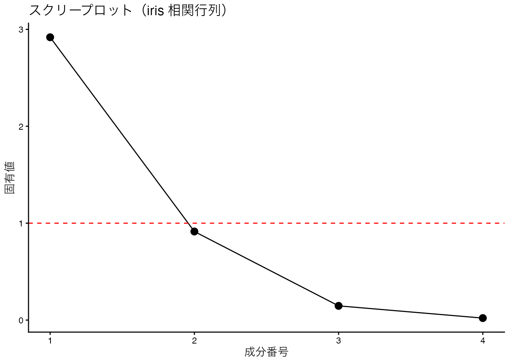

pacman::p_load(tidyverse)13 線型代数の基礎
多変量解析の章(14章，15章)では，因子分析，主成分分析，多次元尺度構成法，クラスター分析などさまざまな手法を紹介した。これらの手法に共通する数学的基盤が線型代数――ベクトルや行列の演算体系――である。統計パッケージが瞬時に結果を出してくれる時代ではあるが，その仕組みを知らなければ結果の意味を正しく理解できないし，出力の妥当性を判断することもできない。
行列を使う最大の利点は，多くの数字のセットを簡潔な記号で一般的に表現できることにある。心理学のデータは「\(n\)人の回答者 \(\times\) \(m\)個の変数」という長方形の構造をしているが，これはまさに行列そのものである。行列の言葉で記述すると，平均や分散の計算も，回帰分析の推定も，因子分析の原理も，統一的な枠組みで表現できる。
この章では，行列の基本的な計算規則とRでの操作方法を学ぶ。
13.1 スカラー・ベクトル・行列
13.1.1 スカラー
行列でもベクトルでもない，ただの1つの数値をスカラー(scalar)と呼ぶ。普段の計算で使っている\(1, 2, 3.14\)などはすべてスカラーである。
13.1.2 ベクトル
複数の数値を一列にまとめたものをベクトルと呼ぶ。横に並べたものを行ベクトル(row vector)，縦に並べたものを列ベクトル(column vector)という。
\[ \text{行ベクトル: } \boldsymbol{a} = \begin{pmatrix} 1 & 3 & 5 \end{pmatrix}, \quad \text{列ベクトル: } \boldsymbol{b} = \begin{pmatrix} 2 \\ 4 \\ 6 \end{pmatrix} \]
\(\boldsymbol{a}\)はサイズ\(1 \times 3\)の行ベクトル，\(\boldsymbol{b}\)はサイズ\(3 \times 1\)の列ベクトルである。行列やベクトルは慣例として太字(\(\boldsymbol{A}\), \(\boldsymbol{x}\))で書く。
Rのベクトルには行・列の区別がないが，matrix()で明示できる。
# Rのベクトル（行・列の区別なし）
a <- c(1, 3, 5)
a[1] 1 3 5# 行ベクトル（1×3の行列として）
matrix(a, nrow = 1) [,1] [,2] [,3]
[1,] 1 3 5# 列ベクトル（3×1の行列として）
matrix(a, ncol = 1) [,1]
[1,] 1
[2,] 3
[3,] 513.1.3 行列
行列(matrix)とは，数を長方形に並べたものである。横の並びを行(row)，縦の並びを列(column)と呼ぶ。
\[ \boldsymbol{A} = \begin{pmatrix} a_{11} & a_{12} & \cdots & a_{1m} \\ a_{21} & a_{22} & \cdots & a_{2m} \\ \vdots & \vdots & \ddots & \vdots \\ a_{n1} & a_{n2} & \cdots & a_{nm} \end{pmatrix} \]
これは\(n\)行\(m\)列の行列で，サイズを\(n \times m\)と表す。成分\(a_{ij}\)の添え字は，最初が行番号，次が列番号である。心理学のデータ行列では，行が回答者(ケース)，列が変数(項目)に対応するのが一般的である。
Rではmatrix()関数で行列を作る。デフォルトでは列優先(column-major order)で要素が埋められる。
# 列優先（デフォルト）: 1列目→2列目の順に埋まる
A <- matrix(1:6, nrow = 2)
A [,1] [,2] [,3]
[1,] 1 3 5
[2,] 2 4 6# 行優先: byrow = TRUE で行方向に埋める
B <- matrix(1:6, nrow = 2, byrow = TRUE)
B [,1] [,2] [,3]
[1,] 1 2 3
[2,] 4 5 6要素へのアクセスは[行, 列]で行う。
A[2, 3] # 2行3列目の要素[1] 6A[1, ] # 1行目全体（ベクトル）[1] 1 3 5A[, 2] # 2列目全体（ベクトル）[1] 3 413.2 特殊な行列
データ分析でよく登場する特殊な行列を紹介する。
正方行列: 行数と列数が等しい行列(\(n \times n\))。
対称行列: \(a_{ij} = a_{ji}\)を満たす正方行列。左上から右下の対角線を軸に対称で，相関行列や分散共分散行列はその代表例である。
3変数\(x_1, x_2, x_3\)の相関行列は次のような形をしている。
\[ \boldsymbol{R} = \begin{pmatrix} 1 & r_{12} & r_{13} \\ r_{12} & 1 & r_{23} \\ r_{13} & r_{23} & 1 \end{pmatrix} \]
対角成分は1(自分自身との相関)，非対角成分は対称(\(r_{ij} = r_{ji}\))である。分散共分散行列は対角成分が各変数の分散，非対角成分が共分散の対称行列となる。
\[ \boldsymbol{S} = \begin{pmatrix} s_1^2 & s_{12} & s_{13} \\ s_{12} & s_2^2 & s_{23} \\ s_{13} & s_{23} & s_3^2 \end{pmatrix} \]
対角行列: 対角成分以外がすべて0の正方行列。単位行列\(\boldsymbol{I}\)は対角成分がすべて1の対角行列で，「どんな行列にかけても変わらない」という，スカラーにおける1のような存在である。
# 3×3の単位行列
diag(3) [,1] [,2] [,3]
[1,] 1 0 0
[2,] 0 1 0
[3,] 0 0 1# ベクトルから対角行列を作成
diag(c(2, 5, 3)) [,1] [,2] [,3]
[1,] 2 0 0
[2,] 0 5 0
[3,] 0 0 3# 行列から対角成分を取り出す
M <- matrix(1:9, nrow = 3)
diag(M)[1] 1 5 9diag()はスカラーを渡すと単位行列，ベクトルを渡すと対角行列を作り，行列を渡すと対角成分を取り出す。引数の型によって動作が変わる多機能な関数である。
13.3 行列の演算
13.3.1 加法・減法
行列の足し算・引き算は，対応する位置にある成分どうしを加える(引く)だけである。サイズが同じ行列でないと計算できない。
\[ \begin{pmatrix} 1 & 2 \\ 3 & 4 \end{pmatrix} + \begin{pmatrix} 5 & 6 \\ 7 & 8 \end{pmatrix} = \begin{pmatrix} 6 & 8 \\ 10 & 12 \end{pmatrix} \]
A <- matrix(c(1, 3, 2, 4), nrow = 2)
B <- matrix(c(5, 7, 6, 8), nrow = 2)
A + B [,1] [,2]
[1,] 6 8
[2,] 10 12A - B [,1] [,2]
[1,] -4 -4
[2,] -4 -413.3.2 スカラー倍
行列にスカラーをかけると，各成分がスカラー倍される。
2 * A [,1] [,2]
[1,] 2 4
[2,] 6 813.3.3 行列の積
行列の掛け算は普通の掛け算とは異なる。掛けて足すという操作が入る。まず行ベクトルと列ベクトルの積(内積)から見てみよう。
\[ \begin{pmatrix} 1 & 2 & 1 \end{pmatrix} \begin{pmatrix} 3 \\ 4 \\ 2 \end{pmatrix} = 1 \times 3 + 2 \times 4 + 1 \times 2 = 13 \]
掛け算なのに足し算が入る。これが行列計算の特徴である。
行列\(\boldsymbol{A}\)(\(n \times m\))と行列\(\boldsymbol{B}\)(\(m \times l\))の積は，\(n \times l\)の行列になる。前の行列の列数と後ろの行列の行数が一致していないと計算できない。結果の\((i,j)\)要素は，\(\boldsymbol{A}\)の\(i\)行と\(\boldsymbol{B}\)の\(j\)列の内積である。
\[ \begin{pmatrix} 1 & 2 \\ 3 & 4 \end{pmatrix} \begin{pmatrix} 2 \\ 1 \end{pmatrix} = \begin{pmatrix} 1 \times 2 + 2 \times 1 \\ 3 \times 2 + 4 \times 1 \end{pmatrix} = \begin{pmatrix} 4 \\ 10 \end{pmatrix} \]
スカラーの計算と違い，かける順番を入れ替えると結果が変わる(\(\boldsymbol{AB} \neq \boldsymbol{BA}\))。Rでは%*%が行列積，*は要素ごとの積である。この区別は非常に重要である。
A <- matrix(c(1, 3, 2, 4), nrow = 2)
b <- c(2, 1)
# 行列積（%*%）
A %*% b [,1]
[1,] 4
[2,] 10# 要素ごとの積（*）…行列積とはまったく異なる
A * b [,1] [,2]
[1,] 2 4
[2,] 3 4*を使うと各行にbの要素がリサイクルされてかかるだけで，行列積とは意味が異なる。
13.3.4 転置
行列の行と列を入れ替える操作を転置(transpose)と呼び，\(\boldsymbol{A}'\)や\(\boldsymbol{A}^T\)と書く。
\[ \boldsymbol{A} = \begin{pmatrix} 1 & 2 & 3 \\ 4 & 5 & 6 \end{pmatrix} \quad \Rightarrow \quad \boldsymbol{A}' = \begin{pmatrix} 1 & 4 \\ 2 & 5 \\ 3 & 6 \end{pmatrix} \]
\(2 \times 3\)の行列は転置すると\(3 \times 2\)になる。対称行列は転置しても変わらない(\(\boldsymbol{A}' = \boldsymbol{A}\))。
A <- matrix(1:6, nrow = 2)
A [,1] [,2] [,3]
[1,] 1 3 5
[2,] 2 4 6t(A) [,1] [,2]
[1,] 1 2
[2,] 3 4
[3,] 5 6転置にはいくつか重要な性質がある。特に積の転置\((\boldsymbol{AB})' = \boldsymbol{B}'\boldsymbol{A}'\)は，順番が逆になることに注意してほしい。
13.3.5 逆行列
逆行列は，行列における「割り算」のような存在である。ある正方行列\(\boldsymbol{A}\)に対して，\(\boldsymbol{A}\boldsymbol{A}^{-1} = \boldsymbol{I}\)（単位行列）となる行列\(\boldsymbol{A}^{-1}\)を逆行列と呼ぶ。スカラーでいえば「逆数をかけると1になる」のと同じ考え方である。
\(2 \times 2\)行列の場合，逆行列は次の公式で求められる。
\[ \boldsymbol{A} = \begin{pmatrix} a & b \\ c & d \end{pmatrix} のとき，\quad \boldsymbol{A}^{-1} = \frac{1}{ad - bc}\begin{pmatrix} d & -b \\ -c & a \end{pmatrix} \]
分母の\(ad - bc\)は行列式と呼ばれ，これが0のとき逆行列は存在しない。Rではsolve()で計算する。
A <- matrix(c(2, 5, 1, 3), nrow = 2)
A [,1] [,2]
[1,] 2 1
[2,] 5 3# 逆行列
solve(A) [,1] [,2]
[1,] 3 -1
[2,] -5 2# AA^{-1} = I の確認（丸め誤差が出るので round する）
round(A %*% solve(A), 10) [,1] [,2]
[1,] 1 0
[2,] 0 1逆行列は連立方程式の解法に直結する。\(\boldsymbol{Ax} = \boldsymbol{b}\)の両辺に左から\(\boldsymbol{A}^{-1}\)をかけると\(\boldsymbol{x} = \boldsymbol{A}^{-1}\boldsymbol{b}\)が得られる。回帰分析の推定量\(\hat{\boldsymbol{\beta}} = (\boldsymbol{X}'\boldsymbol{X})^{-1}\boldsymbol{X}'\boldsymbol{y}\)も，この仕組みで成り立っている。
13.3.6 トレース
正方行列の対角成分の総和をトレース(trace)と呼び，\(\mathrm{tr}(\boldsymbol{A}) = \sum_{i=1}^{n} a_{ii}\)と表す。後述する固有値と密接な関係がある。
A <- matrix(c(1, 2, 6, 5), nrow = 2)
# トレース = 対角成分の和
sum(diag(A))[1] 613.4 データの行列表現
心理学のデータを行列の言葉で扱ってみよう。\(n\)人の回答者に\(m\)個の変数を測定したとすると，データは\(n \times m\)の行列\(\boldsymbol{X}\)になる。
13.4.1 平均ベクトルと平均偏差行列
\(\boldsymbol{1}\)をすべて1のベクトルとすると，各変数の平均ベクトルは次のように書ける。
\[ \boldsymbol{m} = \frac{1}{n}\boldsymbol{X}'\boldsymbol{1} \]
各成分から平均を引いた平均偏差行列は\(\boldsymbol{V} = \boldsymbol{X} - \boldsymbol{1}\boldsymbol{m}'\)であり，これを使って分散共分散行列は次の行列積で表される。
\[ \boldsymbol{S} = \frac{1}{n}\boldsymbol{V}'\boldsymbol{V} \]
さらに各変数を標準偏差で割って標準化した行列\(\boldsymbol{Z}\)を使えば，相関行列は
\[ \boldsymbol{R} = \frac{1}{n}\boldsymbol{Z}'\boldsymbol{Z} \]
と表される。記述統計量が行列の積で統一的に記述できるのが，行列を使う利点のひとつである。
13.4.2 Rでの確認
irisデータセットの数値4変数を使って，行列演算と組み込み関数の結果が一致することを確かめてみよう。
# データ行列
X <- as.matrix(iris[, 1:4])
n <- nrow(X)
# 平均ベクトル
one <- rep(1, n)
m <- t(X) %*% one / n
as.vector(m)[1] 5.843333 3.057333 3.758000 1.199333colMeans(X)Sepal.Length Sepal.Width Petal.Length Petal.Width
5.843333 3.057333 3.758000 1.199333 # 平均偏差行列
V <- X - one %*% t(m)
# 分散共分散行列（nで割る = 標本分散）
S <- t(V) %*% V / n
# 標準偏差の対角行列
Q <- diag(sqrt(diag(S)))
# 標準化スコア行列
Z <- V %*% solve(Q)
# 相関行列
R_manual <- t(Z) %*% Z / n
round(R_manual, 6) [,1] [,2] [,3] [,4]
[1,] 1.000000 -0.117570 0.871754 0.817941
[2,] -0.117570 1.000000 -0.428440 -0.366126
[3,] 0.871754 -0.428440 1.000000 0.962865
[4,] 0.817941 -0.366126 0.962865 1.000000round(cor(X), 6) Sepal.Length Sepal.Width Petal.Length Petal.Width
Sepal.Length 1.000000 -0.117570 0.871754 0.817941
Sepal.Width -0.117570 1.000000 -0.428440 -0.366126
Petal.Length 0.871754 -0.428440 1.000000 0.962865
Petal.Width 0.817941 -0.366126 0.962865 1.00000013.5 距離行列
ケース(行)間の距離を正方行列にまとめたものが距離行列である。ユークリッド距離を使うのが標準的で，距離行列は対称行列(行き帰りの距離は同じ)，対角成分は0(自分自身との距離)という性質を持つ。
距離行列は多次元尺度構成法(MDS)やクラスター分析の入力として用いられる。Rではdist()で計算する。
# 最初の5ケースだけで確認
iris5 <- iris[1:5, 1:4]
d <- dist(iris5)
d 1 2 3 4
2 0.5385165
3 0.5099020 0.3000000
4 0.6480741 0.3316625 0.2449490
5 0.1414214 0.6082763 0.5099020 0.6480741# 正方行列として表示
as.matrix(d) 1 2 3 4 5
1 0.0000000 0.5385165 0.509902 0.6480741 0.1414214
2 0.5385165 0.0000000 0.300000 0.3316625 0.6082763
3 0.5099020 0.3000000 0.000000 0.2449490 0.5099020
4 0.6480741 0.3316625 0.244949 0.0000000 0.6480741
5 0.1414214 0.6082763 0.509902 0.6480741 0.000000013.6 固有値と固有ベクトル
正方行列\(\boldsymbol{A}\)に対して，次の関係を満たすスカラー\(\lambda\)とベクトル\(\boldsymbol{x}\)を，それぞれ固有値(eigenvalue)と固有ベクトル(eigenvector)と呼ぶ。
\[ \boldsymbol{Ax} = \lambda \boldsymbol{x} \]
左辺は「行列をかける」操作だが，右辺は「スカラーをかける」だけ。つまり，行列をかけても方向が変わらず，伸び縮みだけするような特別なベクトルがあるということである。\(\lambda\)がその伸び率を表す。
具体例で確認しよう。
\[ \begin{pmatrix} 1 & 6 \\ 2 & 5 \end{pmatrix} \begin{pmatrix} 1 \\ 1 \end{pmatrix} = \begin{pmatrix} 7 \\ 7 \end{pmatrix} = 7 \begin{pmatrix} 1 \\ 1 \end{pmatrix} \]
確かに\(\lambda = 7\)，\(\boldsymbol{x} = (1, 1)'\)で成り立っている。
A <- matrix(c(1, 2, 6, 5), nrow = 2)
eig <- eigen(A)
eig$values # 固有値[1] 7 -1eig$vectors # 固有ベクトル（各列が各固有値に対応） [,1] [,2]
[1,] -0.7071068 -0.9486833
[2,] -0.7071068 0.316227813.6.1 固有値の重要な性質
\(n \times n\)の正方行列からは\(n\)個の固有値が得られる。固有値にはいくつかの重要な性質がある。
トレースとの関係: 固有値の総和は行列の対角成分の総和(トレース)に一致する。
\[ \sum_{i=1}^{n} \lambda_i = \mathrm{tr}(\boldsymbol{A}) = \sum_{i=1}^{n} a_{ii} \]
sum(eig$values) # 固有値の総和[1] 6sum(diag(A)) # トレース[1] 6対称行列の場合: 対称行列の固有値はすべて実数であり，異なる固有値に対応する固有ベクトルは互いに直交する。分散共分散行列や相関行列は対称行列なので，この性質が保証される。
13.6.2 スペクトル分解
対称行列\(\boldsymbol{A}\)は，固有値を対角に並べた行列\(\boldsymbol{\Lambda}\)と固有ベクトルを列に並べた行列\(\boldsymbol{X}\)を使って，次のように分解できる。
\[ \boldsymbol{A} = \boldsymbol{X}\boldsymbol{\Lambda}\boldsymbol{X}' \]
これをスペクトル分解(spectral decomposition)あるいは固有値分解という。固有値分解は元の行列の情報を「方向(固有ベクトル)」と「大きさ(固有値)」に分離する操作であり，主成分分析や因子分析の数学的な基盤である。
13.6.3 固有値分解と主成分分析
相関行列を固有値分解するとどうなるか。相関行列の対角成分はすべて1なので，トレースは変数の数\(m\)に一致する。固有値分解はこの情報量を重要度順に再分配する操作である。
# irisの相関行列を固有値分解
R <- cor(iris[, 1:4])
eig_R <- eigen(R)
# 固有値
eig_R$values[1] 2.91849782 0.91403047 0.14675688 0.02071484# 寄与率（各固有値が全体に占める割合）
eig_R$values / sum(eig_R$values)[1] 0.729624454 0.228507618 0.036689219 0.005178709# 累積寄与率
cumsum(eig_R$values) / sum(eig_R$values)[1] 0.7296245 0.9581321 0.9948213 1.0000000第1固有値が全体の約73%を説明している。つまり4変数の情報の大部分が1つの主成分(次元)でまとめられるということである。これが主成分分析(PCA)の原理であり，prcomp()の内部で行われている計算そのものである。
# 固有値の大きさを可視化（スクリープロット）
data.frame(
Component = 1:4,
Eigenvalue = eig_R$values
) %>%
ggplot(aes(x = Component, y = Eigenvalue)) +
geom_point(size = 3) +
geom_line() +
geom_hline(yintercept = 1, linetype = "dashed", color = "red") +
scale_x_continuous(breaks = 1:4) +
labs(
title = "スクリープロット（iris 相関行列）",
x = "成分番号",
y = "固有値"
) +
theme_classic()
赤い破線は固有値=1のラインで，これを下回る成分は変数1つ分の情報量にも満たないことを意味する。固有値の大きさから成分数を決めるのがスクリープロットの読み方である。
因子分析では，相関行列\(\boldsymbol{R}\)の構造を\(\boldsymbol{R} \approx \boldsymbol{A}\boldsymbol{A}' + \boldsymbol{D}^2\)(\(\boldsymbol{A}\)は因子負荷行列，\(\boldsymbol{D}^2\)は独自分散)というモデルで近似する。この推定にも固有値分解が基礎となっている。
13.7 用語のまとめ
| 用語 | 意味 | Rの関数/演算子 |
|---|---|---|
| スカラー | ただの数値 | — |
| ベクトル | 数値の1次元の並び | c() |
| 行列 | 数値の2次元の並び | matrix() |
| 転置 | 行と列を入れ替える | t() |
| 行列積 | 掛けて足す乗法 | %*% |
| 要素ごとの積 | 対応する位置の掛け算 | * |
| 逆行列 | かけると単位行列になる | solve() |
| 対角成分 | 正方行列の\(a_{ii}\) | diag() |
| トレース | 対角成分の総和 | sum(diag()) |
| 固有値分解 | \(\boldsymbol{Ax} = \lambda\boldsymbol{x}\)を求める | eigen() |
| 相関行列 | 変数間の相関係数の行列 | cor() |
| 分散共分散行列 | 分散と共分散の行列 | cov() |
| 距離行列 | ケース間の距離の行列 | dist() |
13.8 課題
irisデータセットの数値4変数について，相関行列と分散共分散行列を計算し，それぞれの対角成分に何が入っているか確認しよう。また，数値4変数を標準化(scale())したデータの分散共分散行列が相関行列と一致することを確かめよう。次の2つの行列\(\boldsymbol{A}\)，\(\boldsymbol{B}\)について，\(\boldsymbol{AB}\)と\(\boldsymbol{BA}\)を計算し，結果が異なることを確認しよう。 \[ \boldsymbol{A} = \begin{pmatrix} 1 & 2 \\ 3 & 4 \end{pmatrix}, \quad \boldsymbol{B} = \begin{pmatrix} 5 & 6 \\ 7 & 8 \end{pmatrix} \] さらに，積の転置\((\boldsymbol{AB})' = \boldsymbol{B}'\boldsymbol{A}'\)が成り立つことも確認しよう。
irisの数値4変数のうち最初の5ケースについて，中心化(各列から平均を引く)した行列\(\boldsymbol{V}\)をscale(center = TRUE, scale = FALSE)で作成し，\(\frac{1}{n}\boldsymbol{V}'\boldsymbol{V}\)がcov()の結果と近い値になることを確認しよう。ヒント:cov()は\(n\)ではなく\(n-1\)で割る不偏分散を返す。irisの相関行列を固有値分解し，各成分の寄与率を求めよう。次にprcomp(iris[, 1:4], scale. = TRUE)を実行し，そのsdevの二乗(各主成分の分散)が固有値と一致することを確かめよう。距離行列と相関行列のどちらも対称行列だが，対角成分の意味が異なる。
irisの数値4変数の最初の10ケースについて距離行列を求め，対角成分がすべて0であること，相関行列の対角成分がすべて1であることを確認しよう。その違いがなぜ生じるか考察してみよう。